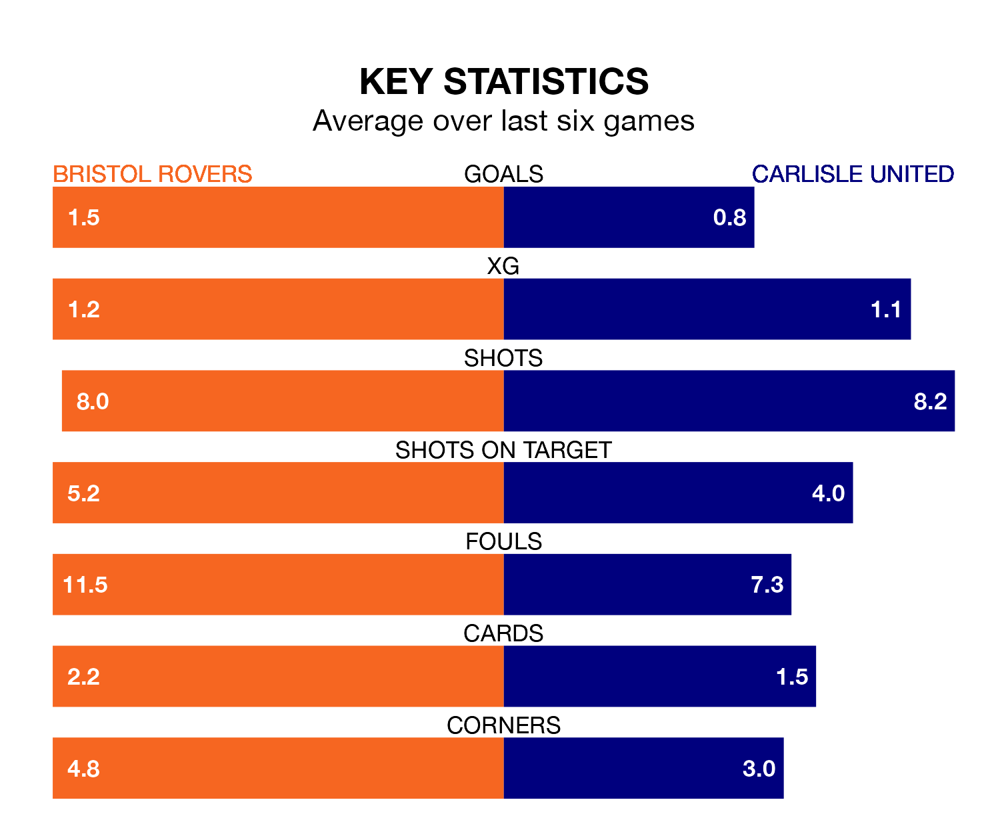

Bristol Rovers are heavy favourites to keep all three points at home in Saturday's kick-off against Carlisle United.
The Gas, who sit 13th in EFL League One with 33 games played, are priced at 1.6 to seal victory at the Memorial Stadium.
Sitting 11 places and 23 points behind them in the table, Carlisle are 4.6 to win with *Betting Company*, while the draw is at 3.8.
Rovers are in mixed form in EFL League One, with three wins and three losses from their last six games.
With no wins and six losses over that period, Carlisle's form is much worse – they have taken no points from 18, compared to the Gas's nine.
With 26 goals in 32 games so far this season, United are the league's third-lowest scorers with 0.8 goals per game. And they are conceding more than average, letting in 55 goals at a rate of 1.7 per game.
The home team, meanwhile, are above average scorers, with 1.4 goals per game, compared to a league average of 1.3. They have conceded 1.5 goals per game.
In Chris Martin, Rovers have one of the league's sharpest shooters so far this season. He has notched 13 goals in 23 appearances, to sit seventh in the scoring charts.
His goal rate of one every 124 minutes is much quicker than that of Jordan Gibson, the visitors' top scorer with a goal every 315 minutes, and a total of seven goals in 31 games.
In the last three years, Rovers and Carlisle have played each other on three occasions. Rovers won two of them and Carlisle one.
Their last meeting was on November 11, when Rovers won 1-0 away.
Rovers' last match was on February 17, a 3-1 loss against Northampton Town, with Martin getting the goal for the Gas.
Carlisle lost 4-0 against Cambridge United last time out, also on February 17.
Updated: 10:08 (UTC), 23/02/24